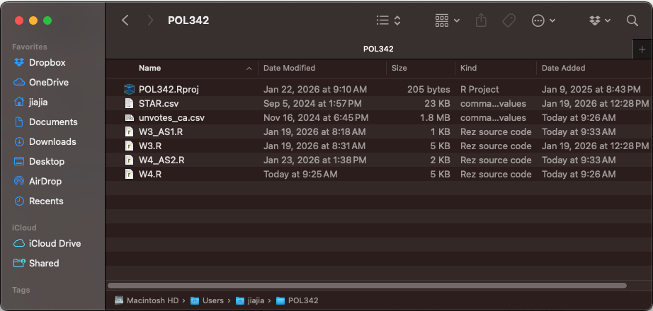
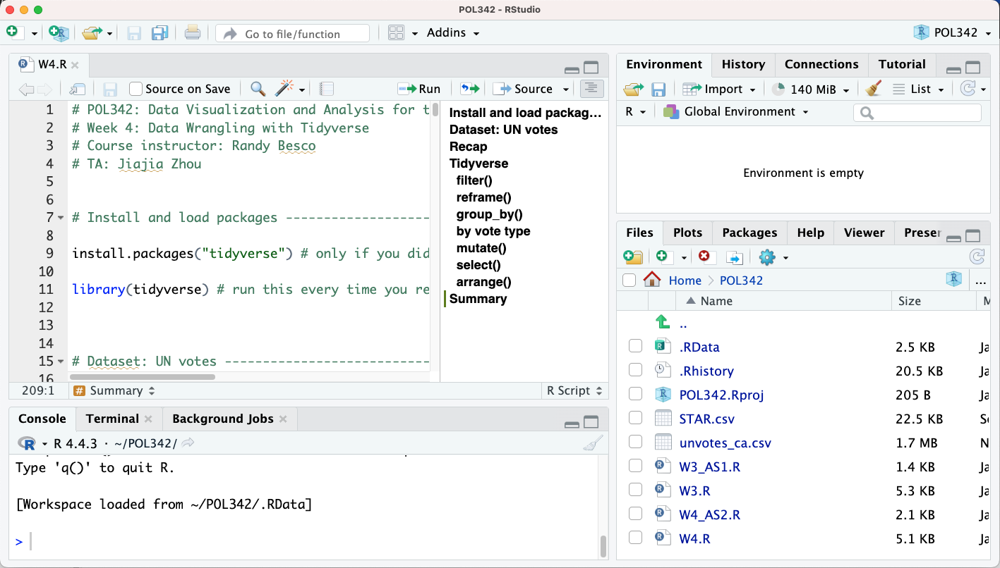

Chapter 3 Data Wrangling with Tidyverse
Week 4 tutorial goals:
- Packages
- Pipes
- Logical operators
- Tidyverse functions for datasets
filter()reframe()group_by()mutate()arrange()select()
3.1 Before the start of each class
You should download the .R script and dataset from the Quercus folder for this week (Files > Practical > Week 4). Move the files to the .R project folder we created last week. Your folder should look something like this now:

Open RStudio using your .Rproject file and follow along using the W4.R script.

3.2 Dataset: UN votes
The data for UN votes here come from the package “unvotes.” You can find out more about the package here: https://github.com/dgrtwo/unvotes and
https://cran.r-project.org/web/packages/unvotes/unvotes.pdf
Know your current directory and where the data file is. You should be using the R project you created last week.
Read file as unvotes data.frame object
The following code will work if you have unvotes_ca.csv file in your R project folder.
| variable | desc. |
|---|---|
| rcid | The roll call id; used to join with un_votes and un_roll_call_issues |
| country | Country name, by official English short name |
| country_code | 2-character ISO country code |
| year | Year in which vote took place |
| vote | Vote result as yes/abstain/no |
| session | Session number. The UN holds one session per year; these started in 1946 |
| importantvote | Whether the vote was classified as important by the U.S. State Department report “Voting Practices in the United Nations”. These classifications began with session 39 |
| date | Date of the vote |
| unres | Resolution code |
| amend | Whether the vote was on an amendment; coded only until 1985 |
| para | Whether the vote was only on a paragraph and not a resolution; coded only until 1985 |
| short | Short description |
| descr | Longer description |
| short_name | Two-letter issue codes |
| issue | Descriptive issue name |
View the data
## rcid country country_code year vote session importantvote date unres
## 1 6 Canada CA 1946 no 1 0 1946-01-04 R/1/107
## 2 8 Canada CA 1946 yes 1 0 1946-01-05 R/1/297
## 3 11 Canada CA 1946 yes 1 0 1946-02-05 R/1/376
## 4 11 Canada CA 1946 yes 1 0 1946-02-05 R/1/376
## 5 18 Canada CA 1946 no 1 0 1946-02-03 R/1/532
## amend para short
## 1 0 0 DECLARATION OF HUMAN RIGHTS
## 2 1 0 ECOSOC POWERS
## 3 0 0 TRUSTEESHIP AMENDMENTS
## 4 0 0 TRUSTEESHIP AMENDMENTS
## 5 1 0 ECOSOC CONSULTANTS
## descr
## 1 TO ADOPT A CUBAN PROPOSAL (A/3-C) THAT AN ITEM ON A DECLARATION OF THE RIGHTS AND DUTIES OF MAN BE TABLED.
## 2 TO ADOPT A SECOND 6TH COMM. AMENDMENT (A/14) TO THE PROVISIONAL RULES OF PROCEDURE, WHICH AMENDMENT EPLACES PROVISIONAL RULE T WITH A NEW TEXT AUTHORIZING THE ECONOMIC & SOC. COUNCIL TO CALL INTERNATIONAL CONFERENCES ON ANY MATTER WITHIN ITS CO
## 3 TO ADOPT DRAFT RESOLUTIONS I AND II AS A WHOLE, OF THE 4TH COMM. REPORT (A/34) ON NON-SELF-GOVERNING TERRITORIES. RESOLUTION I PROVIDES TO PROMOTE THE POLITICAL, SOCIAL, ECONOMIC, AND EDUCATIONAL ASPIRATIONS OF NON-SELF-GOVERNING PEOPLES THROUG
## 4 TO ADOPT DRAFT RESOLUTIONS I AND II AS A WHOLE, OF THE 4TH COMM. REPORT (A/34) ON NON-SELF-GOVERNING TERRITORIES. RESOLUTION I PROVIDES TO PROMOTE THE POLITICAL, SOCIAL, ECONOMIC, AND EDUCATIONAL ASPIRATIONS OF NON-SELF-GOVERNING PEOPLES THROUG
## 5 TO ADOPT USSR (ORAL) AMENDMENT REPLACING THE 1ST COMM. DRAFT RESOLUTION (A/54/REV.1) WITH THE FOLLOWING: \\TAKING INTO CONSIDERATION THE QUESTION RAISED BY THE WORLD FEDERATION OF TRADE UNIONS CONCERNING ITS PARTICIPATION IN THE WORK OF THE ECO
## short_name issue
## 1 hr Human rights
## 2 ec Economic development
## 3 co Colonialism
## 4 ec Economic development
## 5 ec Economic development3.3 Recap
We are going to spend around 15-30 minutes practising what we learnt last week.
- Try answering the following questions based on what we learnt last week:
- What are the names of the 15 variables in the dataset? (Hint:
colnames()) - What are the data types of variables
voteandissue? (Hint:class()) - What are the unique values in
voteandissue? (Hint:unique()) - Could you provide a tally of the data under
vote? (Hint:table()) - What is the median
yearin the dataset?
- What are the names of the 15 variables in the dataset? (Hint:
Conditional statements and operators
Conditional statements produce logical class (i.e. TRUE or FALSE) output to manipulate objects and use functions.
Operators are used to construct conditional statements.
- Comparison operators
- Equal
== - Not equal
!= - More than
> - Less than
< - Greater than or equal to
>= - Less than or equal to
<=
- Equal
- Logical operators
- And
& - Or
| - Not
!
- And
- Miscellaneous operator
- In
%in%
- In
Run a few examples to see how they work
- 5 MORE THAN 3
## [1] TRUE- 10 LESS THAN -100
## [1] FALSE- “3 more than 5” AND “3 more than 1”
## [1] FALSE- “3 more than 5” OR “3 more than 1”
## [1] TRUE- 1 EQUALS TO 3
## [1] FALSE- “apple” EQUALS TO “apple”
## [1] TRUE## [1] FALSE- 1 NOT EQUALS TO 3
## [1] TRUE3.4 Packages
What is a package?
- New functions or other code that can be added to R
- Like an extension for Chrome, app for smartphone
- Created by people for free
- Thousands! But some are more common
3.5 Pipes and Tidyverse
Pipes
The pipe operator lets us do things in a sequence or chain. It looks like this: |>
- Without pipes, you have to read from inside of brackets to outside, like math
- There is also a Tidyverse specific pipe, but we won’t use it
%>%(magrittr)
Pipes facilitate a sequence of actions performed on a single object. After every action, the |> means the output of the previous action is used as the input (argument) of the next action (function).
A pipe puts the output into the brackets
- As the first argument
## rcid country country_code year
## Min. : 6 Length:5732 Length:5732 Min. :1946
## 1st Qu.:2100 Class :character Class :character 1st Qu.:1979
## Median :3540 Mode :character Mode :character Median :1990
## Mean :3491 Mean :1991
## 3rd Qu.:4797 3rd Qu.:2006
## Max. :9145 Max. :2019
##
## vote session importantvote date
## Length:5732 Min. : 1.00 Min. :0.00000 Length:5732
## Class :character 1st Qu.:34.00 1st Qu.:0.00000 Class :character
## Mode :character Median :45.00 Median :0.00000 Mode :character
## Mean :45.65 Mean :0.08442
## 3rd Qu.:61.00 3rd Qu.:0.00000
## Max. :74.00 Max. :1.00000
## NA's :425
## unres amend para short
## Length:5732 Min. :0.0000 Min. :0.0000 Length:5732
## Class :character 1st Qu.:0.0000 1st Qu.:0.0000 Class :character
## Mode :character Median :0.0000 Median :0.0000 Mode :character
## Mean :0.0486 Mean :0.2365
## 3rd Qu.:0.0000 3rd Qu.:0.0000
## Max. :1.0000 Max. :1.0000
## NA's :3553 NA's :3330
## descr short_name issue
## Length:5732 Length:5732 Length:5732
## Class :character Class :character Class :character
## Mode :character Mode :character Mode :character
##
##
##
## ## rcid country country_code year
## Min. : 6 Length:5732 Length:5732 Min. :1946
## 1st Qu.:2100 Class :character Class :character 1st Qu.:1979
## Median :3540 Mode :character Mode :character Median :1990
## Mean :3491 Mean :1991
## 3rd Qu.:4797 3rd Qu.:2006
## Max. :9145 Max. :2019
##
## vote session importantvote date
## Length:5732 Min. : 1.00 Min. :0.00000 Length:5732
## Class :character 1st Qu.:34.00 1st Qu.:0.00000 Class :character
## Mode :character Median :45.00 Median :0.00000 Mode :character
## Mean :45.65 Mean :0.08442
## 3rd Qu.:61.00 3rd Qu.:0.00000
## Max. :74.00 Max. :1.00000
## NA's :425
## unres amend para short
## Length:5732 Min. :0.0000 Min. :0.0000 Length:5732
## Class :character 1st Qu.:0.0000 1st Qu.:0.0000 Class :character
## Mode :character Median :0.0000 Median :0.0000 Mode :character
## Mean :0.0486 Mean :0.2365
## 3rd Qu.:0.0000 3rd Qu.:0.0000
## Max. :1.0000 Max. :1.0000
## NA's :3553 NA's :3330
## descr short_name issue
## Length:5732 Length:5732 Length:5732
## Class :character Class :character Class :character
## Mode :character Mode :character Mode :character
##
##
##
## Tidyverse functions
Tidyverse is a set of functions and packages
we will focus on six functions for manipulating data frames
use pipes and conditional operators a lot!
Tidyverse functions for datasets
filter(): subsets the data based on a conditional statementreframe(): collapses/summarizes the dataset to produce stated summary statistics (e.g.mean())group_by(): divides the data based on specified groups so that subsequent functions can be run on each group separatelymutate(): creates a new variable (i.e. new column) in the datasetarrange(): order the rows based on a criterionselect(): keep columns using their variable names (columns not specified are dropped from the dataset)
filter()
The filter() function allows you to slice out parts of the data based on your criterion.
By inserting these conditional statements into the filter function, we can create subsets of the dataset.
- Note assignment operator and pipes go in opposite directions, which is a little confusing
afterColdWar <- unvotes |>
filter(year > 1990)
# top 8 rows in the subset containing data after 1990
head(afterColdWar,8)## rcid country country_code year vote session importantvote date
## 1 3593 Canada CA 1991 abstain 46 0 1991-12-06
## 2 3594 Canada CA 1991 yes 46 1 1991-12-06
## 3 3595 Canada CA 1991 yes 46 0 1991-12-06
## 4 3596 Canada CA 1991 yes 46 0 1991-12-06
## 5 3596 Canada CA 1991 yes 46 0 1991-12-06
## 6 3597 Canada CA 1991 yes 46 0 1991-12-06
## 7 3598 Canada CA 1991 abstain 46 0 1991-12-06
## 8 3598 Canada CA 1991 abstain 46 0 1991-12-06
## unres amend para short
## 1 R/46/28 NA NA BAN, AIR, WATER AND OUTER SPACE NUCLEAR TESTING
## 2 R/46/29 NA NA COMPREHENSIVE TEST-BAN-TREATY
## 3 R/46/31 NA NA DENUCLEARIZATION, SOUTH ASIA
## 4 R/46/32 NA NA NON-NUCLEAR STATES
## 5 R/46/32 NA NA NON-NUCLEAR STATES
## 6 R/46/33 NA NA ARMS RACE, OUTER SPACE
## 7 R/46/34A NA NA SOUTH AFRICA, NUCLEAR WEAPONS
## 8 R/46/34A NA NA SOUTH AFRICA, NUCLEAR WEAPONS
## descr
## 1 Amendment of the Treaty Banning Nuclear Weapon Tests in the Atmosphere, in Outer Space and under Water
## 2 Comprehensive Nuclear-Test-Ban Treaty
## 3 Establishment of a nuclear-weapon-free zone in South Asia
## 4 Conclusion of effective international arrangements to assure non nuclear weapon States against the use or threat of use of nuclear weapons
## 5 Conclusion of effective international arrangements to assure non nuclear weapon States against the use or threat of use of nuclear weapons
## 6 Prevention of an arms race in outer space
## 7 Condemns South Africa's continued pursuit of a nuclear capability and all forms of nuclear collaboration by any State, corporation, institution or individual with the racist regime that enable it to frustrate the objective of the Declaration wh
## 8 Condemns South Africa's continued pursuit of a nuclear capability and all forms of nuclear collaboration by any State, corporation, institution or individual with the racist regime that enable it to frustrate the objective of the Declaration wh
## short_name issue
## 1 nu Nuclear weapons and nuclear material
## 2 nu Nuclear weapons and nuclear material
## 3 nu Nuclear weapons and nuclear material
## 4 nu Nuclear weapons and nuclear material
## 5 di Arms control and disarmament
## 6 di Arms control and disarmament
## 7 nu Nuclear weapons and nuclear material
## 8 di Arms control and disarmamentMultiple pipes for multiple steps:
## rcid country country_code year
## Min. :3593 Length:2781 Length:2781 Min. :1991
## 1st Qu.:4210 Class :character Class :character 1st Qu.:1999
## Median :4804 Mode :character Mode :character Median :2006
## Mean :4938 Mean :2006
## 3rd Qu.:5417 3rd Qu.:2013
## Max. :9145 Max. :2019
##
## vote session importantvote date
## Length:2781 Min. :46.0 Min. :0.0000 Length:2781
## Class :character 1st Qu.:54.0 1st Qu.:0.0000 Class :character
## Mode :character Median :61.0 Median :0.0000 Mode :character
## Mean :60.7 Mean :0.1694
## 3rd Qu.:68.0 3rd Qu.:0.0000
## Max. :74.0 Max. :1.0000
## NA's :425
## unres amend para short
## Length:2781 Min. :1 Min. :1 Length:2781
## Class :character 1st Qu.:1 1st Qu.:1 Class :character
## Mode :character Median :1 Median :1 Mode :character
## Mean :1 Mean :1
## 3rd Qu.:1 3rd Qu.:1
## Max. :1 Max. :1
## NA's :2779 NA's :2556
## descr short_name issue
## Length:2781 Length:2781 Length:2781
## Class :character Class :character Class :character
## Mode :character Mode :character Mode :character
##
##
##
## reframe()
The reframe() function creates a new data frame (often having the effect of reducing/summarizing the data frame) based on selected functions, e.g. mean(), unique(), n() (number of observations) etc.
Collapses the data and add up the number of votes that are yes
## sum(vote == "yes")
## 1 2675Group by year, then collapse to show yes votes by year
## # A tibble: 73 × 2
## year `sum(vote == "yes")`
## <int> <int>
## 1 1946 21
## 2 1947 10
## 3 1948 12
## 4 1949 19
## 5 1950 4
## 6 1951 2
## 7 1952 7
## 8 1953 7
## 9 1954 4
## 10 1955 2
## # ℹ 63 more rowsYou can produce more than one summary statistic.
unvotes |>
reframe(yearmin = min(year), # minimum year
yearmax = max(year), # maximum year
yesvotes = sum(vote=="yes"), # total number who voted "yes"
yesshare = sum(vote=="yes")/n()) # total number voted "yes" divided by total number of observations, n()## yearmin yearmax yesvotes yesshare
## 1 1946 2019 2675 0.4666783Note that in the sum function above, a conditional statement vote=="yes" is inserted so that the total number of votes can be tallied. This is possible because TRUE takes the value of 1 and FALSE takes the value of 0. For example,
| vote | based on conditional statement | value |
|---|---|---|
| “yes” | TRUE | 1 |
| “no” | FALSE | 0 |
| “no” | FALSE | 0 |
| “yes” | TRUE | 1 |
Output of sum function in this example will be 2.
group_by()
The group_by() function allows you to apply functions to subsets of the data. If we use group_by(year), the subsequent functions will be applied separately to each group with the same year value.
# by year
unvotes |>
group_by(year) |>
reframe(yesvotes = sum(vote=="yes"),
yesshare = sum(vote=="yes")/n()) # n() -- number of observations## # A tibble: 73 × 3
## year yesvotes yesshare
## <int> <int> <dbl>
## 1 1946 21 0.808
## 2 1947 10 0.556
## 3 1948 12 0.245
## 4 1949 19 0.38
## 5 1950 4 0.235
## 6 1951 2 1
## 7 1952 7 0.241
## 8 1953 7 0.438
## 9 1954 4 0.5
## 10 1955 2 0.2
## # ℹ 63 more rows## # A tibble: 3 × 2
## vote votes
## <chr> <int>
## 1 abstain 1574
## 2 no 1483
## 3 yes 2675mutate()
The mutate() function allows you to add new columns to your dataframe. For example, if you wanted to retain the original dataframe while calculating the number of yes votes and the yes vote share in each year, you can apply the same functions using mutate() instead of reframe()
new_unvotes <- unvotes |>
group_by(year) |>
mutate(yesvotes = sum(vote=="yes"),
yesshare = sum(vote=="yes")/n()) # n() -- number of observationsView your new variables
select()
The select() function allows you to reduce the dataset by selecting only the variables you are interested in, or it can also be used to reorder your dataset.
## country year issue vote
## 1 Canada 1946 Human rights no
## 2 Canada 1946 Economic development yes
## 3 Canada 1946 Colonialism yes
## 4 Canada 1946 Economic development yes
## 5 Canada 1946 Economic development no
## 6 Canada 1946 Economic development yes
## 7 Canada 1946 Economic development yes
## 8 Canada 1946 Colonialism yes
## 9 Canada 1946 Colonialism yes
## 10 Canada 1946 Colonialism yes3.6 Summary
Piping is useful when the output you want requires a series of operations. For example, the following operations tally the number of “yes”, “no”, “abstain” votes in 2015, and save the result as a new data frame called unvotes_2015 by assigning the pipe to a new object.
unvotes_2015 <- unvotes |>
filter(year==2015) |> # subset data in 2015
group_by(vote) |> # group_by allows functions to run separately for each unique element in variable
reframe(n()) # n() -- number of observationsThis is how the new data frame looks
## # A tibble: 3 × 2
## vote `n()`
## <chr> <int>
## 1 abstain 16
## 2 no 48
## 3 yes 28Another example
Let’s say we are interested in the issue of “Human rights,” and we want to know the yearly share of all the different votes that Canada has cast after 1990 and before 2010 (i.e. 1991 to 2009). How would we do it?
## [1] "no" "yes" "abstain"# then, wrangle the data
unvotes |>
filter(year>1990 & year<2010 & issue=="Human rights") |> # three conditions in one statement
group_by(year) |>
reframe(yesshare = sum(vote=="yes")/n(),
noshare = sum(vote=="no")/n(),
abstainshare = sum(vote=="abstain")/n()) # n() -- number of observations## # A tibble: 19 × 4
## year yesshare noshare abstainshare
## <int> <dbl> <dbl> <dbl>
## 1 1991 0.364 0.0909 0.545
## 2 1992 0.455 0.0909 0.455
## 3 1993 0.545 0.273 0.182
## 4 1994 0.643 0.143 0.214
## 5 1995 0.714 0.143 0.143
## 6 1996 0.647 0.235 0.118
## 7 1997 0.6 0.15 0.25
## 8 1998 0.647 0.118 0.235
## 9 1999 0.5 0.2 0.3
## 10 2000 0.471 0.235 0.294
## 11 2001 0.45 0.3 0.25
## 12 2002 0.435 0.217 0.348
## 13 2003 0.48 0.32 0.2
## 14 2004 0.35 0.4 0.25
## 15 2005 0.476 0.286 0.238
## 16 2006 0.429 0.429 0.143
## 17 2007 0.407 0.481 0.111
## 18 2008 0.385 0.462 0.154
## 19 2009 0.304 0.609 0.08703.7 More resources
- Tidyverse pipes: Tidyverse style guide, 4 Pipes
- Non-Tidyverse pipes: R for Data Science, chapter 18
- Data wrangling in general: ModernDive, chapter 3